yap is an AI-powered voice messaging app that organizes recordings into topics, so friends can listen, revisit, and reply to individual thoughts without losing the flow of conversation. A progressive web app (PWA) independently designed, built, and launched in six weeks.
Problem
Friends want to catch up the way they actually talk: long, rambly, and in their own voice. But the tools we use today make us all compromise someway or another.
Calling
Natural conversation, but everyone needs to be available.
Texting
Convenient, but longer thoughts get condensed.
Voice memos
Personal and asynchronous, but topics and replies get buried.
Opportunity
How might we make catching up asynchronously feel as natural and easy to follow as talking in person?
Solution
Long voice chats, organized by topic instead of time
yap uses AI to identify topic changes in long voice memos, turning each thought into a thread friends can listen and reply to separately, without losing the spontaneity of the original recording.


Talk naturally
Record one uninterrupted memo, moving between thoughts freely.
yap organizes the conversation
AI identifies topic changes and labels each segment without rewriting the original audio.
Reply by topic
Each topic becomes a thread where friends can listen and respond.
Core features
From long voice memos to ongoing conversations
CATCH UP
Listen by topic or all at once.
Each memo arrives as labeled topic cards in the group chat. Tap a topic to hear just that part, or tap play next to the mic to open Now Playing and hear everything new, topic by topic.
RESPOND
Talk freely. AI organizes the replies.
Record one rambly, uninterrupted memo. AI threads responses under existing topics and creates new ones when the conversation shifts.
STAY ORGANIZED
Pick up every conversation where you left off.
Replies stay grouped by topic, with playback starting from the first unheard response.
Join
Invite friends by text. No download required.
Sign up with your phone number, create a group, and invite friends through an SMS link that opens in their browser.


Demo
Don’t take my word for it. Let's yap!
Try the working product with live AI topic segmentation. Friends' phone numbers are disconnected for this demo, so no notifications will be sent. Movie night uses synthetic sample audio.
Open demo in browser to record with your microphone if the embedded preview blocks access.


Iterations
Three directions, tested with 30 people
I prototyped three directions in Figma Make and tested them with 30 people, which informed how the final product organizes conversations, supports playback, and keeps the experience voice-first.

What I prompted
AI organizes replies under related messages.
What worked
Topic-based threads, which became how the final organizes replies: by topic, not just by time and sender.
What didn’t
Transcripts beneath every message distracted from listening.

What I prompted
Voice-led chat cards with contextual reply prompts.
What worked
Separate recording and listening states and visible playback progress, which the final keeps, with faces and audio clips in chats instead of transcripts.
What didn’t
“Mentions you.” Tested well but didn’t fit the timeline.

What I prompted
A live-feeling space built around speakers and motion.
What worked
Floating participant avatars, which became Now Playing, where listeners play topics one at a time or back to back and skip ahead.
What didn’t
Live presence indicators.
Build
From Figma prototype to working product in six weeks
I designed, developed, and launched yap independently using Claude Code, Cursor, and Codex. I owned the product decisions, implementation, testing, and deployment, using AI coding agents to accelerate development without compromising the intended experience.
Stack
Built for frictionless access, without an app download
I chose a progressive web app (PWA) to let friends join through SMS. Browser recording captures memos, serverless AI organizes topics, Supabase syncs conversations, and Twilio handles invitations and notifications.
AI
AI identifies topic changes. Code makes the precise cuts.
Yap matches AI-identified topic changes to word-level transcript timestamps for precise audio cuts, while distinguishing replies from new conversations. If processing fails, it retries segmentation or preserves the original memo.
…after two.
Omg also, I think…
Sync
Keeping conversations in sync across devices
Behind every yap is a system that keeps recordings, topics, replies, and listening progress synchronized across friends. Supabase manages this shared conversation state in real time, while Twilio sends SMS notifications so friends know when there's something new to hear.
What one memo becomes in Supabase
Design
Translating Figma designs into production with AI agents
I built a reusable component library in Figma and prototyped the complete user experience before development. Using Figma MCP, I gave coding agents direct access to my designs, then reviewed and iterated on their implementations to ensure the final product stayed consistent with the original design system.
Created a reusable component library
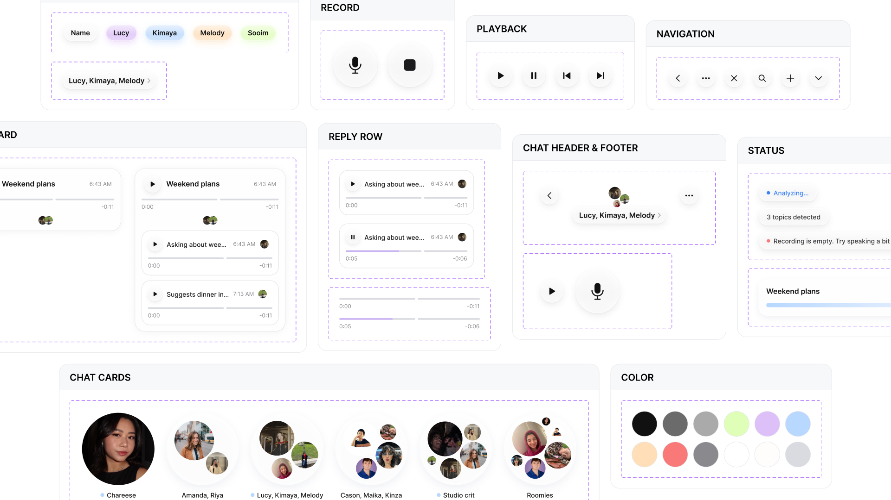
Assembled screens with established components
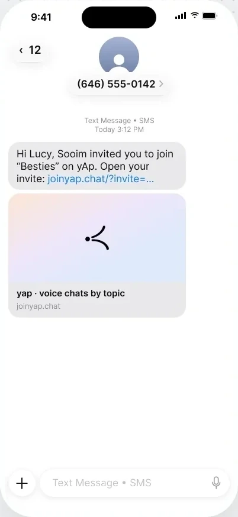
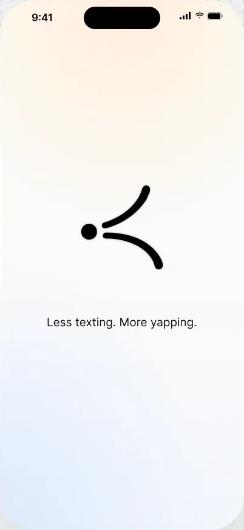
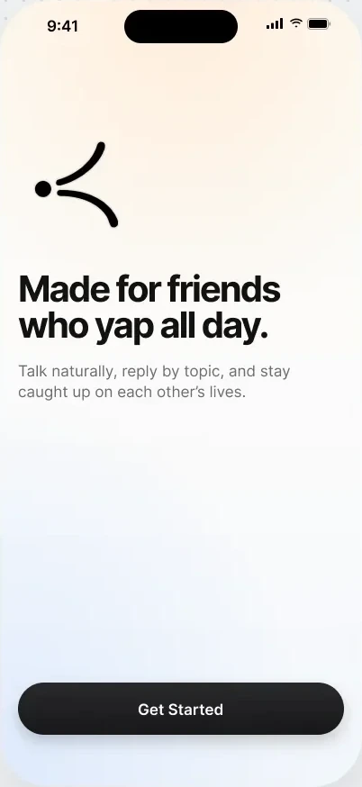
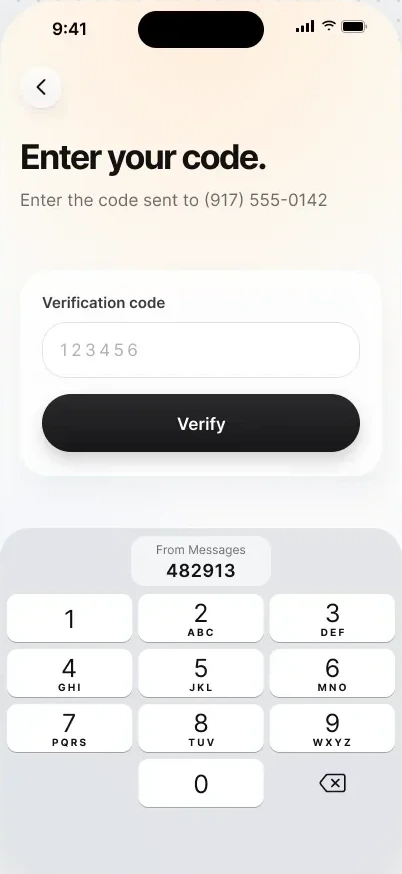
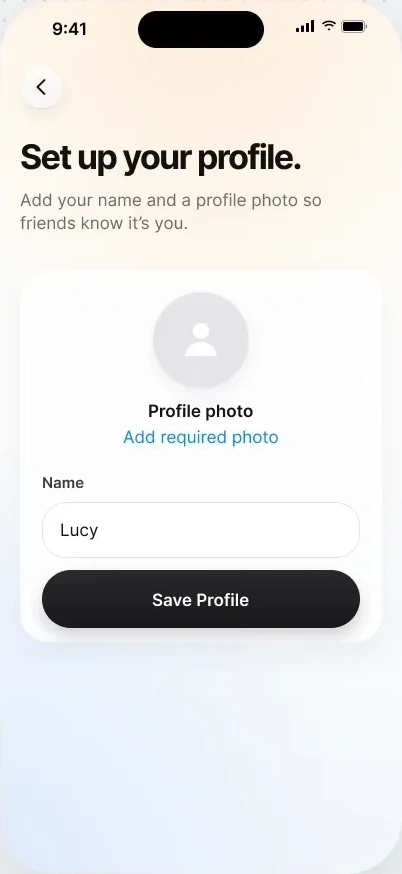
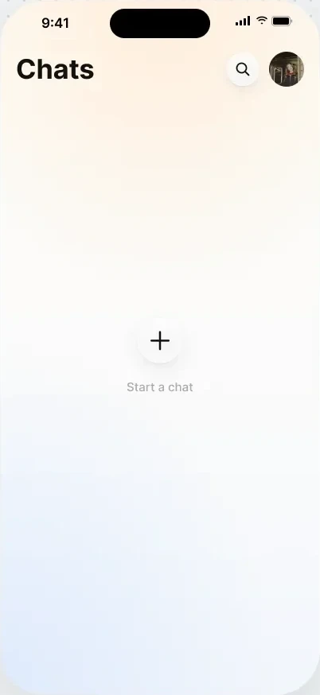
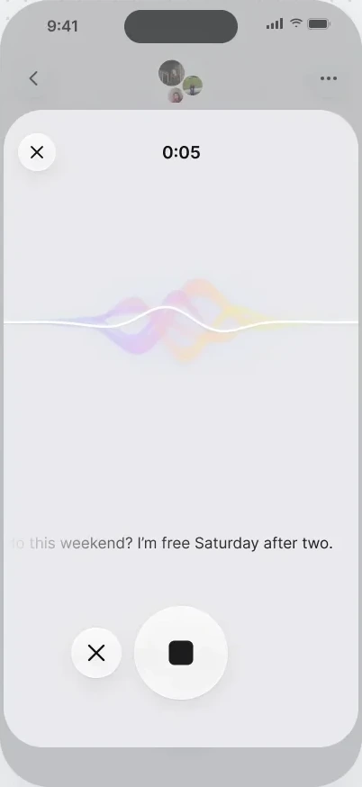
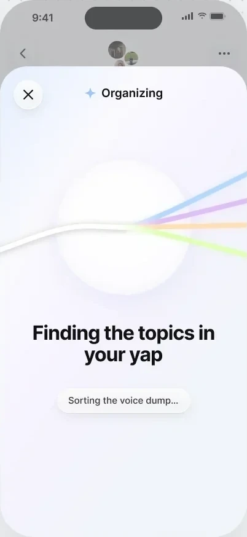
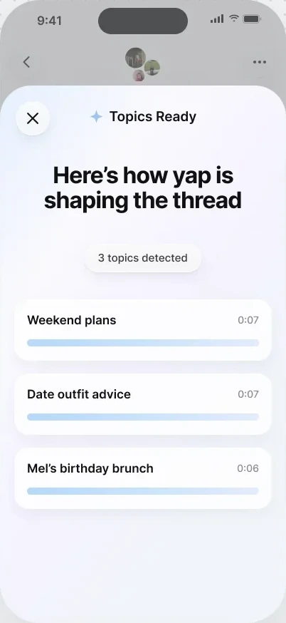
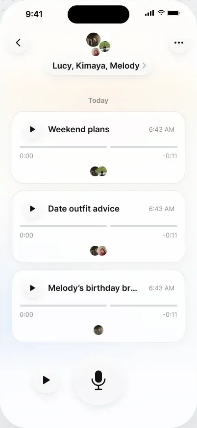
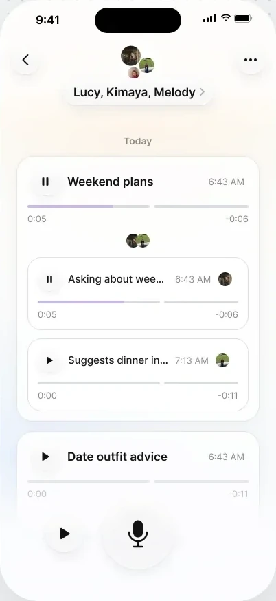
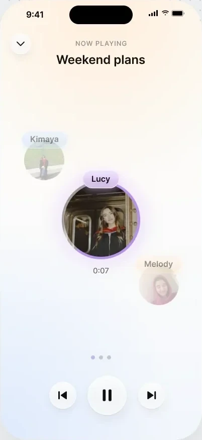
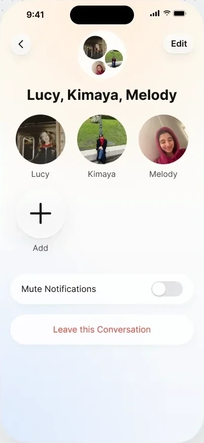
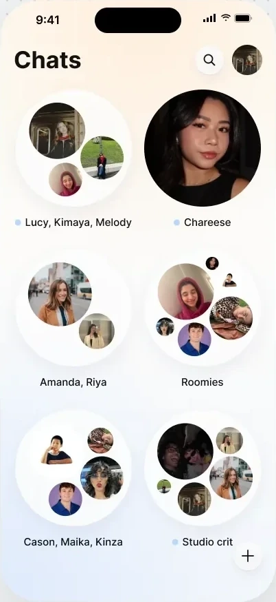
Prototyped user flows

Handed design over to the agents through the Figma MCP

Define
Defining requirements and guardrails for AI development
I documented product requirements, design standards, and agent instructions, requiring functional interactions and reliable messaging even when AI processing fails.
The spec the agents built from
Testing & debugging
Real conversations exposed what early prototypes couldn't.
Remote and in-person testing revealed three critical issues in AI segmentation, playback, and message delivery.
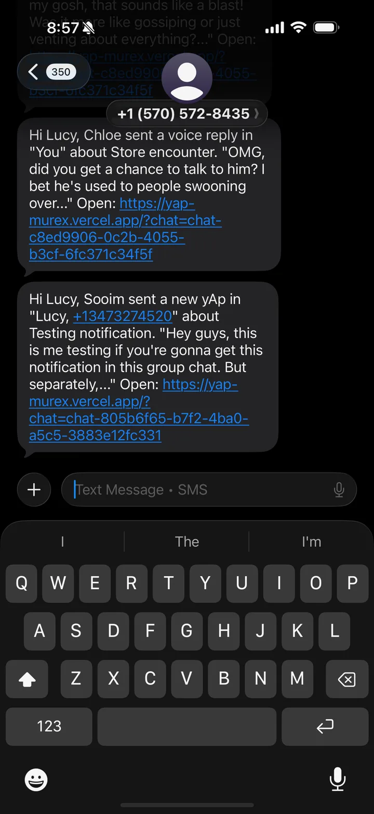

Bug 01 · AI Segmentation
The AI struggled to accurately separate topics in longer voice memos.
When AI merged unrelated topics or misidentified boundaries, I improved segmentation by matching each topic’s opening words to word-level transcript timestamps for precise playback, with sentence-based splitting as a fallback.
>Segmentation breaks on long memos in
api/process-audio.js.
segmentTranscript() returns one segment for a clear 3-topic
memo, and when it does split, the model paraphrases, so
rebuildSegmentTranscripts() can’t match segments back to the
transcript.
1. Update the JSON schema: each segment returns label,
excerpt, and start_anchor, the first 3–10 words
copied verbatim. Max 6 segments; prefer fewer when a boundary is
ambiguous.
2. Resolve boundaries in code: match each
start_anchor against the
transcribeWordTimestamps() output and cut there. Ignore the
model’s start_ms/end_ms.
3. If a long memo still comes back as one segment, fall back to
heuristicSplitMemo() at sentence breaks.
Pipeline only, no UI changes. Run the 3-topic memo in
demo/data.json and paste each segment with its ms range.
>
Bug 02 · Audio Playback
Playing any topic restarted the entire voice memo.
To fix topic playback starting from the beginning, I used transcript-aligned timestamps to play only the selected segment without splitting the original recording.
>Tapping a topic card plays the whole
memo. Every topic in a memo shares one audio_url, but its
topic_segments rows have start_ms/end_ms
missing or set to the full duration, so
PlaybackController starts at 0:00 and never stops.
1. In js/core/data.js, add
repairVoiceMemoSegmentPlayWindows(): when sibling segments
have missing or full-length windows, redistribute them by transcript
length.
2. In PlaybackController (js/features/chat.js),
seek to activeMeta.startAt before play() and
pause on timeupdate at endAt. Never fall back to
the full file.
Playback and data only. Repro with a 3-topic memo and log each segment’s
startAt/endAt.
>
Bug 03 · Sync & Notifications
A successful recording didn’t always mean a delivered message.
To fix memos failing to reach group members or trigger SMS notifications, I corrected synchronization issues across Supabase and Twilio and verified delivery through cross-device testing.
>Memos show up on the sender’s phone
but not for the rest of the group, and SMS alerts often never go out.
ensureRealtimeSyncChannel() drops the Supabase channel on
CHANNEL_ERROR and never resubscribes, and
sendMessageNotifications() sends one request from the
sender’s browser with no retry.
1. Realtime: resubscribe when the channel drops, check its state every 30
seconds, and skip the cache on new voice_messages so the memo
renders.
2. Alerts: queue one notification_jobs row per recipient,
including pending invitees, and have
/api/process-notification-jobs send them through Twilio and
retry failures.
Sync and delivery only. Send a memo from one phone, confirm it appears on the other two and each gets a text.
>
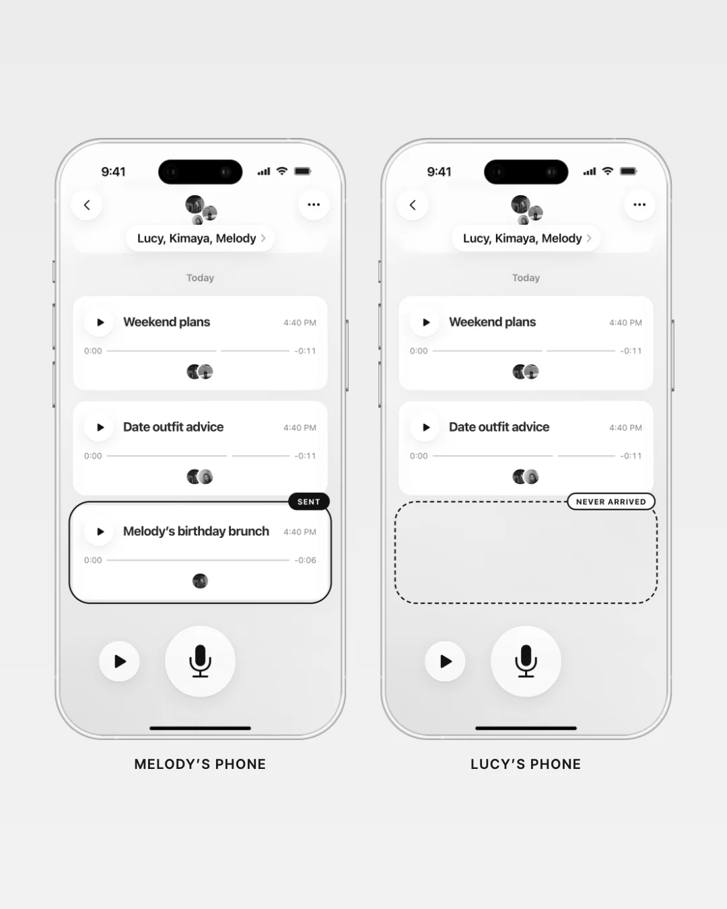
Launch
I launched yap live at MPS Communication Design Demo Day 2026.
Visitors could sign up at joinyap.chat ↗ and exchange real voice memos from their own phones. I designed promotional materials and a feedback notebook to introduce the product and collect firsthand reactions.
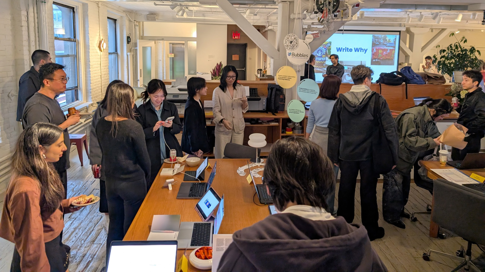
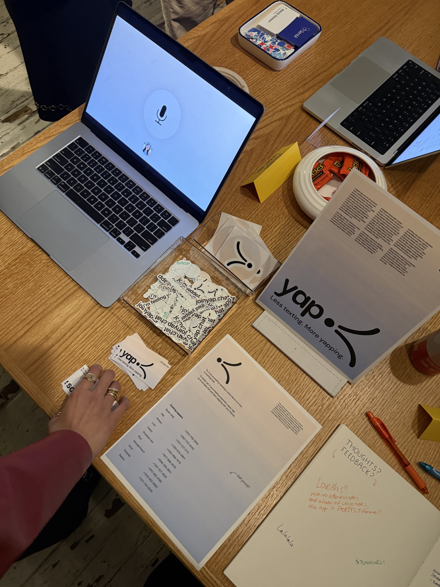
Feedback
yap made an impression beyond the demo.
Following Demo Day, an attendee included yap in his tweet of standout projects, describing it as a “voice inbox for extreme yappers.”
that voice inbox got me fam
— Trong Hatachi (@Trong_Hatachi) May 16, 2026
Reflection
Building yap taught me that designing with AI means designing for its limitations, too.
Taking yap from prototype to product required defining technical constraints, testing real conversations, and resolving cross-device reliability issues beyond what AI coding agents could handle.
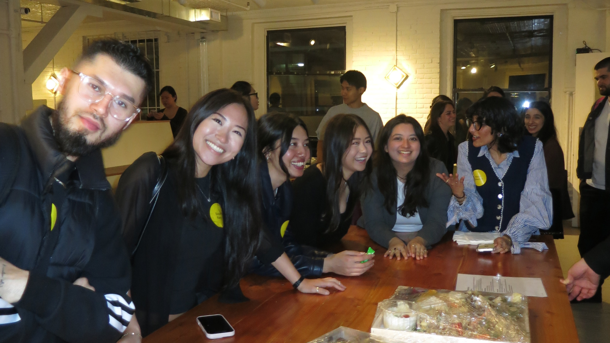
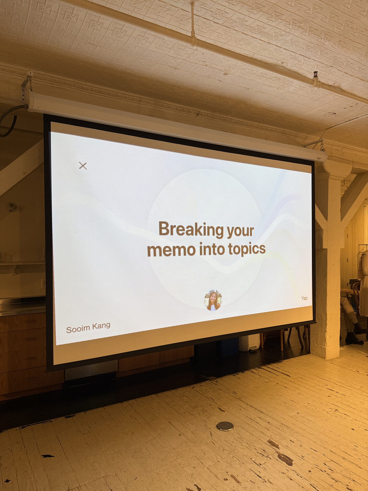
Takeaway 01 · User behavior
Voice-first design means preserving the spontaneity of speaking while giving listeners more control over how they catch up.
Takeaway 02 · Designing with AI
The quality of an AI-powered experience depends as much on the constraints, fallbacks, and interactions surrounding the model as on the model itself.